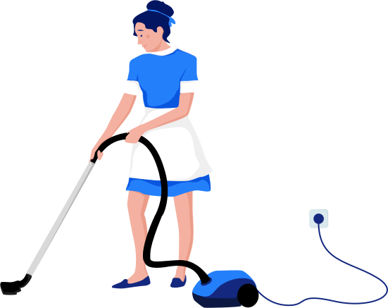

House Keeping Services
"A clean home is a happy home."
Our team of dedicated professionals is passionate about delivering exceptional service and ensuring your satisfaction. We offer a wide range of housekeeping services tailored to meet your unique needs, whether it's regular cleaning, deep cleaning, or organizing cluttered spaces. With our expertise and attention to detail, we guarantee a spotless and refreshed home every time.
